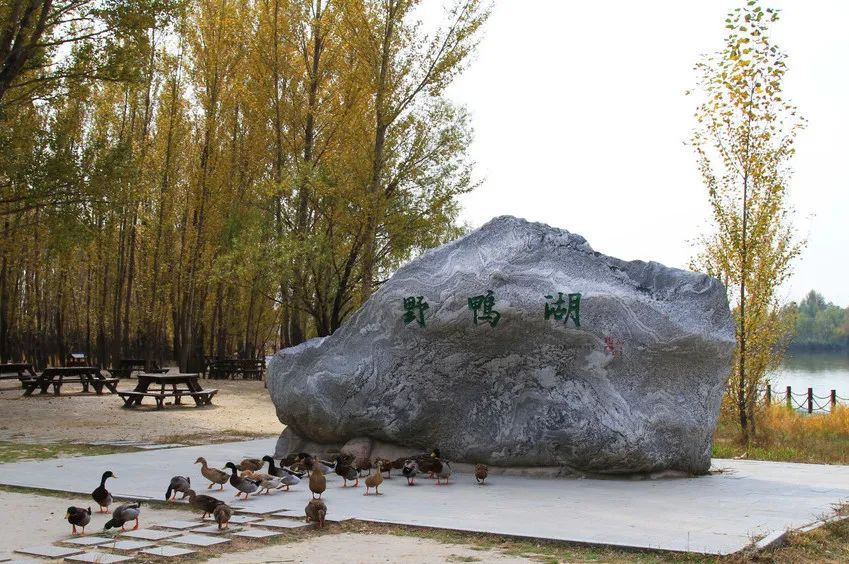

北京野鸭湖自然保护区
Yeyahu National Wetland Park
北京野鸭湖湿地自然保护区位于北京市延庆区西北部，属于华北平原向山西高原、内蒙古高原的过渡地带，是国际鸟类迁移路线“东亚—澳大利亚路线”的中转驿站。该区原为延庆盆地东部妫水河、蔡家河下游，1955年建成官厅水库，形成巨大的人工湖泊湿地。保护区处于水库中上游，沟岔纵横，库湾众多。保护区总面积为6873公顷，其中湿地面积达3939公顷，是北京最大的湿地自然保护区，也是唯一的湿地鸟类自然保护区。据统计野鸭湖湿地鸟种总数达280种，国家一级保护动物9种（黑鹳、东方白鹳、白头鹤、大鸨、金雕、白尾海雕、白肩雕、白鹤、遗鸥），国家二级保护动物40种。高等植物420种、鱼类40种、两栖类5种、兽类10种、昆虫类182种等。
野鸭湖湿地是北京地区鸟类的重要栖息地和华北地区迁徙鸟类重要的中转站。多年来，野鸭湖不断加强栖息地恢复、禽流感监控、日常巡护和鸟类救护工作力度。2009年，野鸭湖建立了远程无线高清监控系统，实现对主要鸟类栖息地的全方位监控，进一步提升了鸟类监测保护工作的整体能力和水平。
